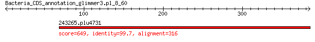

bitscore colors: <40, 40-50 , 50-80, 80-200, >200
 BLASTP 2.2.31+
Reference: Stephen F. Altschul, Thomas L. Madden, Alejandro A.
Schaffer, Jinghui Zhang, Zheng Zhang, Webb Miller, and David J.
Lipman (1997), "Gapped BLAST and PSI-BLAST: a new generation of
protein database search programs", Nucleic Acids Res. 25:3389-3402.
Reference for composition-based statistics: Alejandro A. Schaffer,
L. Aravind, Thomas L. Madden, Sergei Shavirin, John L. Spouge, Yuri
I. Wolf, Eugene V. Koonin, and Stephen F. Altschul (2001),
"Improving the accuracy of PSI-BLAST protein database searches with
composition-based statistics and other refinements", Nucleic Acids
Res. 29:2994-3005.
Database: eggnogv4.proteins.all.fa
14,875,530 sequences; 5,112,597,290 total letters
Query= Bacteria_CDS_annotation_glimmer3.pl_8_60
Length=384
Score E
Sequences producing significant alignments: (Bits) Value
243265.plu4731 649 0.0
> 243265.plu4731
Length=316
Score = 649 bits (1673), Expect = 0.0, Method: Compositional matrix adjust.
Identities = 315/316 (99%), Positives = 316/316 (100%), Gaps = 0/316 (0%)
Query 69 MNKKEPFLATPYLQFNREQWATLRDSVPLTLTKEELIDLKGINEEISLEEVVEIYLPLSR 128
MNKKEPFLATPYLQFNREQWATLRDSVPLTLTKEELIDLKGINEEISLEEVVEIYLPLSR
Sbjct 1 MNKKEPFLATPYLQFNREQWATLRDSVPLTLTKEELIDLKGINEEISLEEVVEIYLPLSR 60
Query 129 LLNFYISSNLRRQAVLEQFLGTDGQKVPYVIGIAGSVAVGKSTTARLLQALLSRWPEHRS 188
LLNFYISSNLRRQAVLEQFLGTDGQKVPYVIGIAGSVAVGKSTTARLLQALLSRWPEHRS
Sbjct 61 LLNFYISSNLRRQAVLEQFLGTDGQKVPYVIGIAGSVAVGKSTTARLLQALLSRWPEHRS 120
Query 189 VELITTDGFLHSNNVLNERGLMKKKGFPQSYDMHSLVKFVSDIKSGSKQVSAPVYSHLTY 248
VELITTDGFLHSN+VLNERGLMKKKGFPQSYDMHSLVKFVSDIKSGSKQVSAPVYSHLTY
Sbjct 121 VELITTDGFLHSNSVLNERGLMKKKGFPQSYDMHSLVKFVSDIKSGSKQVSAPVYSHLTY 180
Query 249 DIVPNEQKFIKQPDILILEGLNVLQSGMDYPHDPHHVFVSDFVDFSIYVDAPEKLLKSWY 308
DIVPNEQKFIKQPDILILEGLNVLQSGMDYPHDPHHVFVSDFVDFSIYVDAPEKLLKSWY
Sbjct 181 DIVPNEQKFIKQPDILILEGLNVLQSGMDYPHDPHHVFVSDFVDFSIYVDAPEKLLKSWY 240
Query 309 ISRFLKFRQGAFSDPDSYFHSYSKLSEEEAINTASDIWQEINGLNLRQNILPTRERASLI 368
ISRFLKFRQGAFSDPDSYFHSYSKLSEEEAINTASDIWQEINGLNLRQNILPTRERASLI
Sbjct 241 ISRFLKFRQGAFSDPDSYFHSYSKLSEEEAINTASDIWQEINGLNLRQNILPTRERASLI 300
Query 369 MTKGTNHTIESVRLRK 384
MTKGTNHTIESVRLRK
Sbjct 301 MTKGTNHTIESVRLRK 316
Lambda K H a alpha
0.320 0.136 0.397 0.792 4.96
Gapped
Lambda K H a alpha sigma
0.267 0.0410 0.140 1.90 42.6 43.6
Effective search space used: 732680857080